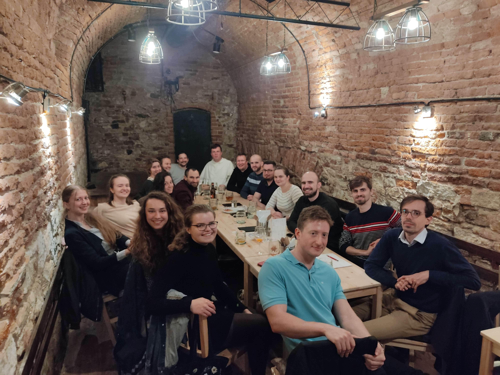

Kto sme?
Nie, nie sme pštrosy... :D
Sme vysokoškoláci a mladí pracujúci ľudia, ktorí sa stretávajú každú stredu (preto streDko, chápeš) počas školského roka po omši o 18:45 na fare - oproti kostolu sv. Jindřicha a sv. Kunhuty.
Okrem pravidelných stretiek organizujeme aj iné akcie - duchovné obnovy, výlety, chodíme spolu na rôzne kultúrne podujatia, zašportovať si... alebo si ideme len tak sadnúť na pivo, burger.
Neváhaj, a príď nás niekedy pozrieť. :))
